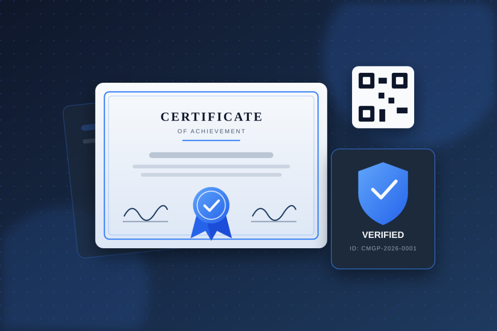

Certificate Management & Generation Platform (CMGP)
An enterprise-grade web platform to create, manage, distribute and verify digital certificates. Supports bulk generation from Excel, customizable templates, dynamic signatories and a public verification portal.
Key Features
- Admin portal with dashboard, analytics, and quick actions.
- Individual and bulk XLSX certificate generation with validation and error reports.
- Eight certificate templates—four landscape and four portrait—with live preview.
- Dynamic management of one to three signatories per template.
- Program management and unique certificate IDs with a custom prefix.
- Public verification by certificate ID, name, email, or verification code.
- User portal with first-login password setup, My Certificates, PDF downloads, profile, and password management.
- Role-based access control, audit logging, JWT authentication, and bcrypt password hashing.
- Cloudinary storage for certificates, logos, and signatures.
Technologies Used
React.js
Node.js
Express.js
PostgreSQL
Tailwind CSS
Redux Toolkit
JWT
Cloudinary
Docker